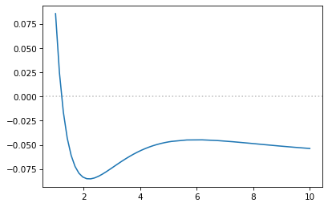

[25]:
import numpy as np
from CADMium import Psgrid
from CADMium import Kohnsham
import matplotlib.pyplot as plt
[35]:
dis_eq = np.linspace(1.0,5,30)
dis_st = np.linspace(5.1,10,10)
distances = np.concatenate((dis_eq, dis_st))
lda_energy = []
Za, Zb = 1,1
Nmo = [[1,0]]
N = [[1,0]]
pol = 2
NP, NM = 7, [4,4]
optKS = {"xc_family" : "lda",
"xfunc_id" : 1,
"cfunc_id" : 12,
"sym" : True,
"fractional" : False}
for d in distances:
#Initialize Grid and Separation
a = d/2
L = np.arccosh(10./a)
loc = np.array(range(-4,5))
grid = Psgrid(NP, NM, a, L, loc)
grid.initialize()
#Kohn Sham Object. SCF Calcualtion
KS = Kohnsham(grid, Za, Zb, pol, Nmo, N, optKS)
KS.scf({"disp" : False})
lda_energy.append(KS.E.E)
print(f" Distance: {d} -> Energy: {KS.E.E}")
energy = np.array(lda_energy)
np.save('h2plus_distance.npy', distances)
np.save('h2plus_lda.npy', lda_energy)
/mnt/c/Users/victo/Dropbox/PHD/cadmium/CADMium/CADMium/kohnsham/scf.py:99: RuntimeWarning: invalid value encountered in true_divide
dif_n = np.max( self.grid.integrate(np.abs(self.n - old_n)) / self.grid.integrate(np.abs(self.n)) )
Distance: 1.0 -> Energy: -0.4145683783488223
Distance: 1.1379310344827587 -> Energy: -0.47568922209238373
Distance: 1.2758620689655173 -> Energy: -0.5161588699357786
Distance: 1.4137931034482758 -> Energy: -0.5430750738553992
Distance: 1.5517241379310345 -> Energy: -0.5608352742997781
Distance: 1.6896551724137931 -> Energy: -0.572286799708926
Distance: 1.8275862068965516 -> Energy: -0.5793186586685862
Distance: 1.9655172413793103 -> Energy: -0.5832483470435494
Distance: 2.103448275862069 -> Energy: -0.5849681825610669
Distance: 2.2413793103448274 -> Energy: -0.5851247032649087
Distance: 2.3793103448275863 -> Energy: -0.584190041325282
Distance: 2.5172413793103448 -> Energy: -0.582499765526698
Distance: 2.655172413793103 -> Energy: -0.5803082359628977
Distance: 2.793103448275862 -> Energy: -0.5778025962083684
Distance: 2.9310344827586206 -> Energy: -0.5751256071726312
Distance: 3.0689655172413794 -> Energy: -0.5723756794966852
Distance: 3.206896551724138 -> Energy: -0.56963327320139
Distance: 3.3448275862068964 -> Energy: -0.5669558355896511
Distance: 3.4827586206896552 -> Energy: -0.564385253940888
Distance: 3.6206896551724137 -> Energy: -0.561951355511639
Distance: 3.7586206896551726 -> Energy: -0.5596745547274161
Distance: 3.896551724137931 -> Energy: -0.5575678812131128
Distance: 4.0344827586206895 -> Energy: -0.5556385544351473
Distance: 4.172413793103448 -> Energy: -0.5538922456588337
Distance: 4.310344827586206 -> Energy: -0.5523220681349172
Distance: 4.448275862068965 -> Energy: -0.5509272101741882
Distance: 4.586206896551724 -> Energy: -0.54970180598681
Distance: 4.724137931034482 -> Energy: -0.548638383586604
Distance: 4.862068965517241 -> Energy: -0.5477283065816296
Distance: 5.0 -> Energy: -0.5469621411394103
Distance: 5.1 -> Energy: -0.5464910343707778
Distance: 5.644444444444444 -> Energy: -0.5449932136635087
Distance: 6.188888888888888 -> Energy: -0.5448648572321146
Distance: 6.733333333333333 -> Energy: -0.5455947634006488
Distance: 7.277777777777778 -> Energy: -0.5468031699309361
Distance: 7.822222222222222 -> Energy: -0.5482334038344566
Distance: 8.366666666666667 -> Energy: -0.5497240028198508
Distance: 8.911111111111111 -> Energy: -0.551178506522132
Distance: 9.455555555555556 -> Energy: -0.5525400886938037
Distance: 10.0 -> Energy: -0.5537721681557687
[37]:
h_energy = -0.25
energy = np.array(lda_energy)
fig, ax = plt.subplots(1,1, dpi=75)
ax.axhline(y=0, alpha=0.5, c="grey", ls=":")
ax.plot(distances, energy - 2*h_energy)
# ax.set_ylim(-1.2,-0.1)
[37]:
[<matplotlib.lines.Line2D at 0x7f74fa437e20>]

[ ]: